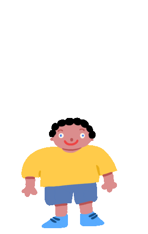
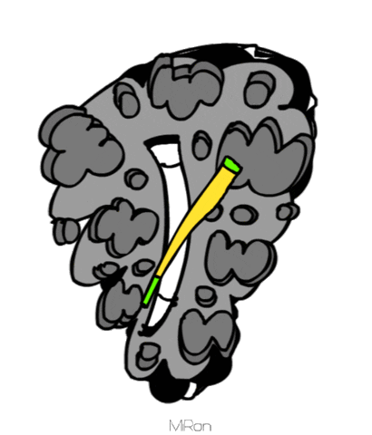

STGs
The Spare Time Gigs.
Stuff I like to do in my free time.

My Timeline
Through here you can see a TimeChart of my life uptil now
Book List
Not a daily reader but i really appreciate them.
Here are the books i think are awesome!
Sankalp's
Blog
A direct link to my personal blog. Haven't updated it in a while but you get the gist.
Meet my people
The Editorial Board provides NIT-B the platform neccesary to bring out the voices in each individual. These are the people who make it possible.

Alpha version of
website
As mentioned somewhere in this website, this is my second attempt at making one. You can head over here to see what my intial website looked like.
My literary
compositions
Writing is a daily task for me, sometimes for the board and sometimes just for personal satiation. Here is some stuff i wrote a while back.